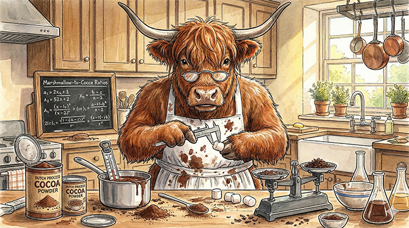
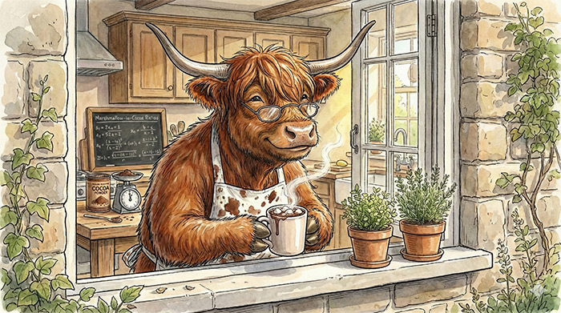
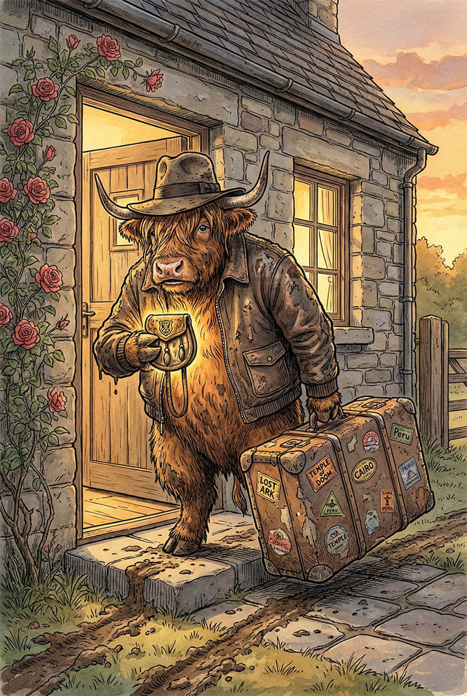
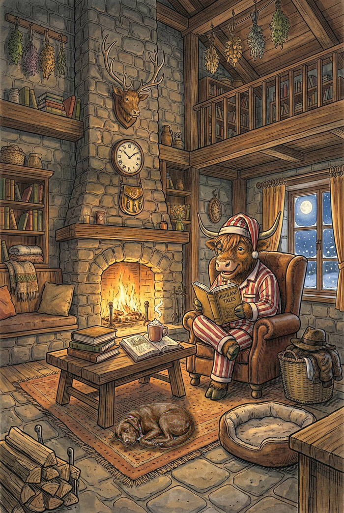

Welcome to the
MacDuff Family Farm!
HOME OF THE
#1 NEW RELEASE
ON

✭ ✭ ✭ ✭ ✭
Meet Wallace MacDuff.

At first glance, Wally is a Highland cow of exceptionally refined taste. He appreciates a heavy knit sweater, a comfortable reading chair, and a climate-controlled environment.

But beneath that rigorous beauty routine and those sensible loafers beats the heart of a world-class explorer. He just happens to be an adventurer who appreciates the proper marshmallow-to-cocoa ratio.
You have officially crossed the threshold into Wally’s personal sanctuary.

This farm is where the adventures pause. It is where Wally rests his hooves after a long flight, hangs up his muddy tartan kilt, and takes a very well-deserved break.

The door is always open and the hearth is always warm. Read all about Wally's epic journey to Great Gran’s Surprise Birthday Jubilee, flip through our family scrapbook, or brew a mug of Wally's famous hot cocoa.